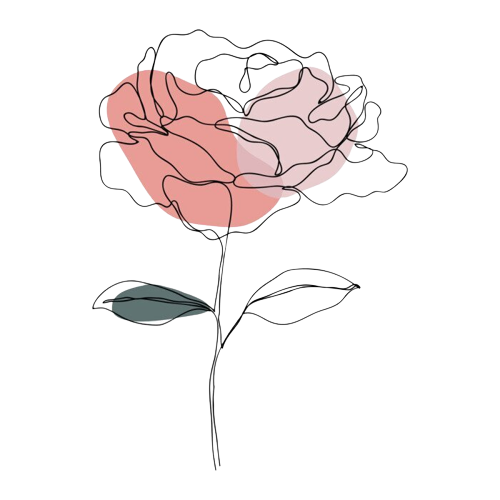

Apresentação
Louise Catherine Oliveira de Melo
Formação:
🎓 Administração - Estácio 2017 - 2020
🎓 Análise e Desenvolvimento de Sistemas - IFS (3° período)
✨ Idade: 29
🏠 Residencia: Aracaju/SE
Sou uma jovem profissional com sede de aprendizado e experiência em campo, recém formada no curso de Administração pela universidade Estácio de Sergipe e graduanda do curso de Análise e Desenvolvimento de Sistemas pelo Instituto Federal de Sergipe.
Iniciei o curso de Administração em 2017.1, finalizando em 2020.2 com CR 8,68.
Durante a minha vida acadêmica participei de diversos projetos da Estácio tais como: campanha de doação de sangue, semana do empreendedorismo, empresa junior, feira de empreendedorismo e inovação e como organizadora de eventos para promoção do curso. Em seguida iniciei o curso de ADS em 2021.2, o qual estou atualmente cursando o 3° período.